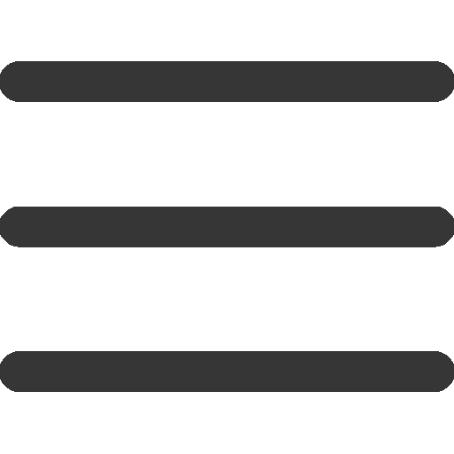

<div class="screen">
  <div class="side-bar" [ngClass]="{ open: open }">
    <button class="menu-bar" (click)="abrir()">
      
    </button>

    <ul class="acoes">
      <ng-container *ngIf="!open; else elseBlock">
        <li (click)="meusLocais()">M</li>
        <li>S</li>
      </ng-container>
      <ng-template #elseBlock>
        <li (click)="meusLocais()">Meus Locais</li>
        <li>Locais Salvos</li>
      </ng-template>
    </ul>
  </div>

  <div class="overlay" *ngIf="openMeusLocais" (mouseup)="meusLocais()">
    <div class="adicionar-modal" (mouseup)="$event.stopPropagation()"></div>
  </div>

  <app-header class="header1 w-full" />
</div>

<!-- fazer que cuando o w seja menor a 600px a tools-bar se esconda -->
